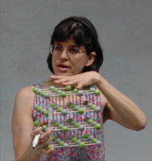
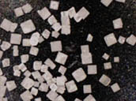
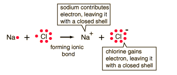
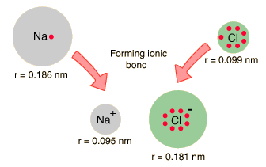

Sodium Chloride
HCl + NaOH → H2O + NaCl
|

| As a solid, sodium chloride is crystalline and forms a cubic lattice. The bonding of the sodium and chlorine atoms is one of the classic examples of ionic bonding. In aqueous solution it ionizes to Na+ and Cl- ions and forms an electrically conducting solution.

Ordinary table salt, 50x
|
|  | The ionic bonding of NaCl can be visualized in terms of Lewis diagrams. |
When the diameters of sodium and chlorine and their ions are measured, they offer some confirmation of the picture of ionic bonding.
|  | When sodium loses an electron to form Na+, its effective size decreases to about half. When chlorine gains an electron to produce the octet structure Cl-, its size increases to almost double (Shipman, et al). |
Sodium chloride exists on the earth in great abundance in sea water and is an important part of the fluid electrolytes of humans and other living organisms.
|
Index
Chemistry concepts
Reference
Shipman, Wilson and Todd
Ch 12 |